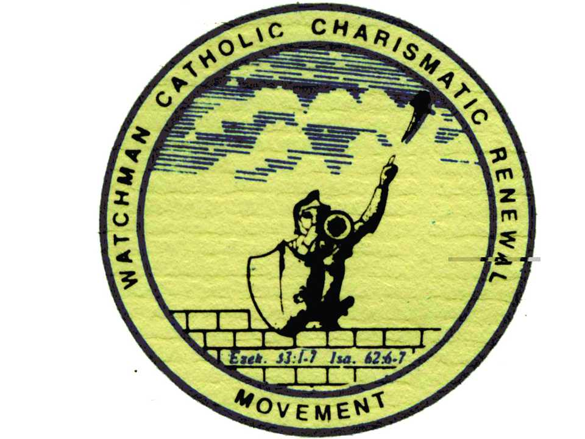

About the Watchman
Introduction

The Watchman Catholic Charismatic Renewal Movement is a movement that God Almighty has raised in these last days to be a channel of blessings to all God-seeking people all over the world who will come in contact with us. It is the evangelistic wing of THE VOICE OF THE LAST DAYS MINISTRY. The Texas Branch of the Movement became functional as a church is September 2013 and was registered as a non-profit corporation in the State of Texas in February 2014.